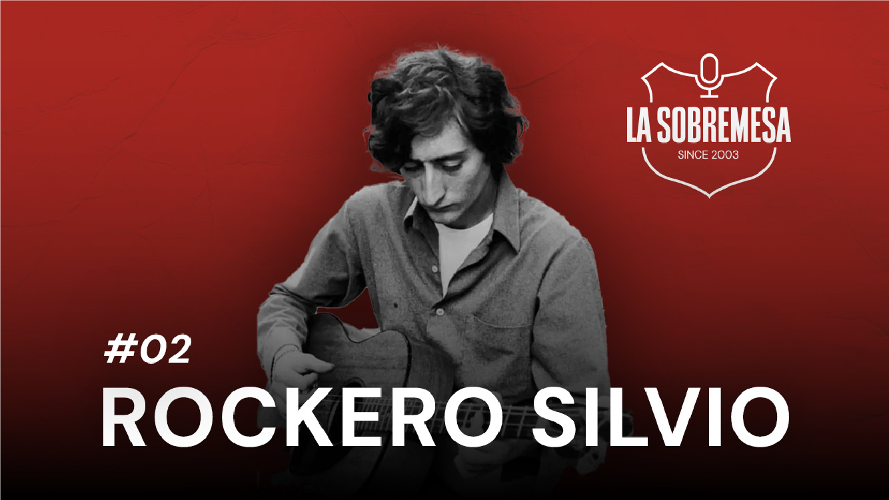
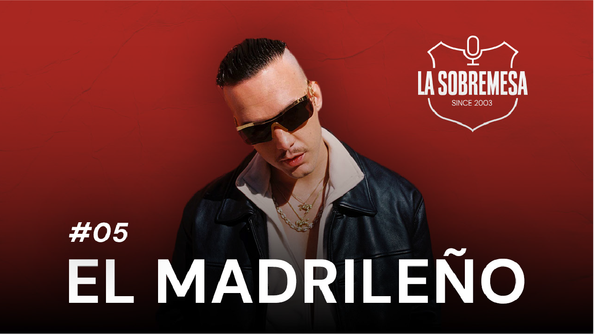
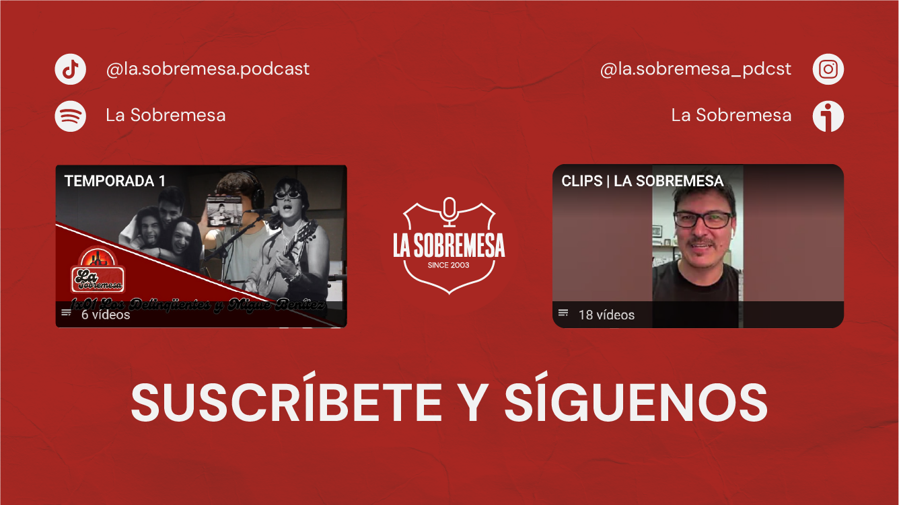
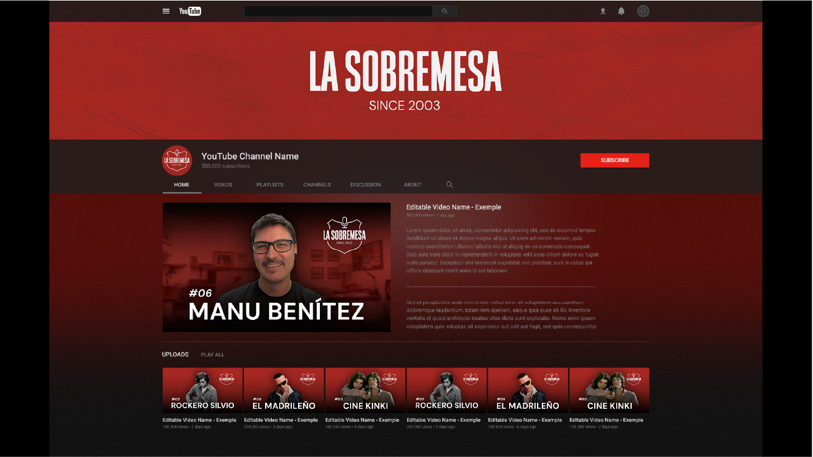

La Sobremesa
Identidad visual para “La Sobremesa”, un podcast creado por dos amigos que conversan sobre los temas culturales que les apasionan. El proyecto busca reflejar la cercanía, la espontaneidad y la riqueza de estas charlas, construyendo una imagen que conecte con una audiencia interesada en la cultura desde un enfoque accesible y contemporáneo.
El concepto gráfico se desarrolla a partir de una identidad pensada para que tradición y juventud se unan en un mismo espacio, generando un equilibrio entre lo clásico y lo actual. El sistema visual es flexible y adaptable a todo tipo de formato digital, permitiendo su aplicación coherente en plataformas de streaming y redes sociales de contenido audiovisual.




